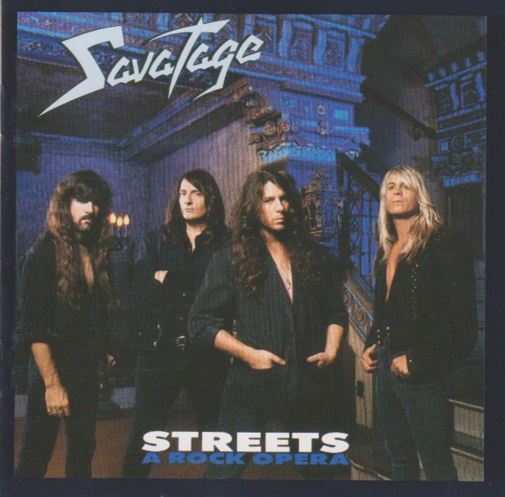

My favourite genre is metal and my favourite band is Savatage. here's a picture of the band memebers:  they don't have a website.
My favourite movie(s) is the hobbit trilogy.  and they dont have a website aswell because why would a film have one anyway.
and they dont have a website aswell because why would a film have one anyway.